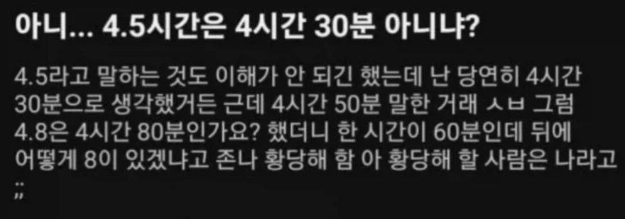

4.5시간은 4시간 30분이다, 아니다 논쟁
댓글
공교육은 ㄹㅇ 실패한걸까
기차역에서 표팔다 보면 별의별 병신새끼들이 다 꼬이는데
1. 14: 22분 기차인데 왜 22분에 출발하냐 22분 59초에 출발해야지 개지랄병 내는 새끼들도 있고
2. 늦게왔는데 기차가 문이 닫혀있길래 문옆에 녹색버튼을 눌렀는데 안열리고 출발해서 놓쳤다
( 애초에 그거 누르면 범칙금임 임의조작이라 ) 민원넣는 새끼
3. 나는 분명히 저녁 8시 표를 달랬는데 표에 적혀있는 20시 는 대체 몇시인지 몰라서 놓쳤다 (감동실화)
4. 최근에 동남아새끼들 플랫폼 1번으로 가라고 손가락으로 1 표시하고 숫자로 1적어줘도
1,2 3,4 가운데서 한참 고민하더니 3,4로 들어가는 새끼들 ( 기초교육을 아예 안받았나봄 )
5. 입석밖에 안남았다니까 자기가 분명히 입석 시스템 없애라고 몇번이고 말했는데 왜 아직 입석을 파냐
입석은 인간성을 말살하는 최악의 시스템 어쩌구 70대 산송장새끼 등등
4.5 4시50분은 내가볼땐 실화맞음
5번은 천동설도 아니고 세상이 지 중심으로 돌아간다고 믿네 ㅋㅋㅋ
1년에 몇명씩옴 srt 있을때 srt 좌석 늘리라고 내가 분명히 민원넣었는데 아직도 매진이라고 !!! 역정내고 돌아감 ㅋㅋ
아 민원넣는 새끼들 심리상태가 저렇구나 싶더라
진짜 서비스업 하다보면 인류애 개박살남 세상에 상식이란게 이정도인가 싶은
사실 자기도 알고있지만 or 뒤늦게 알았지만 자존심 상하니까 그냥 억지주장 하는거임ㅋㅋ
주변에 서비스직 하는사람 썰 들은 이후로 주민센터나 공항에서 좀 짜증나는 말투로 나한테 대해도 찐빠 내는거 아니면 걍 이해하고 넘어감
형님 고생 많으십니다...
4번은 도대체 뭘까....
3번은ㅋㅋㅋㅋㅋ내가 시골에 1시간배차간격인 마을버스 타는동네 살았는데 초딩때 시내에서 놀고 차 시간 잘못봐서 아부지한테 전화했던거 생각나네ㅋㅋ
0.5 소수점 의미를 모르고 있나 보네 ㅋㅋㅋ
와 ㅅㅂ 어쩌냐
10.5만원? 이게 뭐에요? 얼마라는거지? 이러는 경리 있었음
경리인 이유는 모르겠는데 사장님이 왜 뽑은 건 진 알 수 있는 문장이군
근데 단위환산 못하는 사람들 꽤 있지 않음?
0.5시간 X 60분/1시간 = 30분
0.8시간 x 60분/1시간 = 48분
0.5만원 x 10000원/1만원 = 5000원
그쯤되면 공교육에서 배워야 하는걸 못배운거지
넌 뭘 적은거임?
0.5시간*60분/1시간이 뭔 계산이야?
60분(1시간) 혹은 60분=1시간
이걸 적어놓은듯?
시간이랑 분이랑 다르니까 그거 맞추는거 단위환산
얘도 수학시간에 잤네
ㅋㅋㅋㅋㅋㅋㅋㅋㅋㅋㅋㅋㅋㅋㅋㅋㅋㅋㅋ수업시간에 자지말라고 ㅋㅋㅋ
뭔 논쟁이야 그냥 개쳐맞는 샌드백이지 ㅋㅋ
논쟁할게 없는데
산수 안배운놈이나 논쟁하지
의견이 999 : 1 정도 돼보이는데 왜 논쟁임 뒤지게 쳐맞아야지
논쟁라는 단어도 아깝다 ㅋㅋ 갈라쇼라고 하셈 걍

야구 좋아하나? 이닝이 7.3 7.6 이렇게 가는게 아니라 7.1 7.2 이렇게 가는거 신기했었는데
그렇게 쓰기도 하지만 보통 7 1/3 이런식으로 쓰는게 많음. 읽을 때도 7과 3분의 1이닝. 이런식으로 읽고. 네이버 야구에서 투수 기록도 분수로 표시함
하 이거보니까 엊그제 있었던일 생각나네 ㅅㅂ
딸배일 하는데 쿠팡이 갯수 계산할때 일반/멀티가 따로 있는데 일반은 1개로 계산하는 반면에 멀티는 여러개 묶어주는 대신 개당 0.8개로 계산한단말야?
근데 1개짜리 일반은 웬만하면 다들 거절때려서 걍 갯수는 0.8 보정이 걸려있음. 봇한테 나 몇개탔냐 물어보면 뭐 29.6개 39.2개 이런식으로 알려줌.
근데 그거에 대해서 누가 물어보길래 내가 봇은 멀티콜 0.8개로 계산하기때문에 역산하면 알려주는 갯수에서 1.25 곱해야한다고 알려줬거든?
근데 내 댓글 보고서 기집애 하나가 아니거든 오빠? 0.8개로 계산되니까 1.2로 계산하는게 맞는거야 내말이 옳음 ㅇㅇ
이러더라고 ㅋㅋㅋ
그래서 내가 아니야.. 0.5배의 반대가 1.5배가 아니잖아?? 0.8을 분수로 하면 4/5인데 거꾸로 계산하려면 5/4가 돼서 다시 소수로 변환하면 1.25가 맞는거야...
라고 차근차근 설명했더니 아는거 많아서 좋겠다 ㅇㅇ 이지랄하고 삐짐...
하 시발 꼴에 관리자 한다고 저지랄병하는데 나보다 나이도 거의 10살가까이 어린데 길가다 마주쳐도 삐진티내면서 쌩까고
시발 쟤가 먼저 저소리 하는걸 내가 사회성 떨어지는 아스퍼거마냥 아닌데? 0.8 거꾸로하면 1.25가 맞는데?? 이지랄하면서 지적한것도 아니고
쟤가 먼저 저얘기 나누고 있었으면 당연히 내가 지적하면 쟤도 민망해지니까 틀리든 말든 그냥 넘어갔겠지 갯수계산 틀어지는건 내가 아닌데.
내가 맞는말하고있는걸 별 헛소리로 지적하는거 조용하게 바로잡아준건데도 저지랄함. 진짜 개빡친다
ㅋㅋㅋㅋㅋ 복리 마이너스 효과 설명했다간 괴롭힘으로 신고당하겠네
ㅋㅋㅋㅋㅋㅋㅋㅋ
이쁘냐
존나 웃기네 ㅋㅋ
1.5만원이 얼마냐?
상식적으로 생각해서 소숫점 앞이 10진법인데 소숫점뒤가 60진법이 나온다고 생각하나?
시간에서 소수점을 사용하면 당연히 60분에 대한 비율을 의미하니까 너 표현대로라면 '시간에서 소수점은 상식적으로 60분의 비율을 의미하는게 맞지않나?'라고도 표현할 수 있는 듯
이건 또 무슨소리냐...
10.5h는 소숫점 앞뒤로 전부 10진법이고 전체 단위가 h 구만...
시와 분은 단위가 다른건데. 바꿀려면 통으로 바꾸고 대분수 처럼 처리해아지...
난 저런 새끼하곤 말도 안 하는데 그래도 착하네
우리회사에서 휴가표시할때 저렇게하던데?
근데 회사 다니면서 가끔 보지 않음?
와 이런 새끼는 대체 어떻게 취직했지?
와 이런 새끼도 대표를 하네 ㄷㄷ
그럼 0.6시간이 1시간이어야지ㅋㅋ
0.5란건 5할 이란 뜻이고 1은 1시간 이니까 1시간의 반은 30분이여야지
멍청한걸 인정하면 그럴 수 있다 생각하는데 누가봐도 지가 좆병신인데 내가 맞다고 우기면 그것만큼 역겨운게 없어
0.6시간은 그럼 한시간이냐?
없는 논란 만들지 마라 어그로로 돈 벌어먹는 놈아